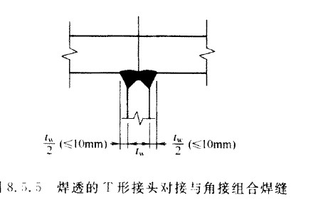

16 疲劳计算及防脆断设计#
16.1 一般规定#
直接承受动力荷载重复作用的钢结构构件及其连接，当应力变化的循环次数 \(n\) 等于或大于
 次时，应进行疲劳计算。
次时，应进行疲劳计算。本章规定不适用于下列条件下结构构件及其连接的疲劳计算：
构件表面温度大于 150℃；
处于海水腐蚀环境；
焊后经热处理消除残余应力；
构件处于低周-高应变疲劳状态。
疲劳计算应采用容许应力幅法，应力按弹性状态计算，容许应力幅按构件和连接类别、应力循环次数以及计算部位的板件厚度确定。对非焊接的构件和连接，其应力循环中不出现拉应力的部位可不计算疲劳强度。
在低温下工作或制作安装的钢结构构件，应进行防脆断设计。
需计算疲劳构件所用钢材应具有冲击韧性的合格保证，钢材质量等级的选用应符合本规范第 4.3.3 条的规定。
16.2 疲劳计算#
常幅疲劳与变幅疲劳条件下的构件及其连接的疲劳计算应符合以下规定：
常幅疲劳条件下构件及其连接的名义正应力幅或剪应力幅应符合下列公式的要求：
\[ \sigma_a \leq \sigma_{ac} \tag{16.2.1-1} \]\[ \tau_a \leq \tau_{ac} \tag{16.2.1-2} \]对焊接部位：
\[ \sigma_a \leq \frac{\sigma_{ac}}{h_t} \tag{16.2.1-3a} \]\[ \tau_a \leq \frac{\tau_{ac}}{h_t} \tag{16.2.1-3b} \]对非焊接部位：
\[ \sigma_a \leq \sigma_{ac} \tag{16.2.1-3c} \]\[ \tau_a \leq \tau_{ac} \tag{16.2.1-3d} \]式中：
\(\sigma_a\) —— 构件验算部位的名义正应力幅；
\(\sigma_{\text{max}}\) —— 计算部位应力循环中的最大名义拉应力（取正值）；
\(\sigma_{\text{min}}\) —— 计算部位应力循环中的最小名义拉应力或压应力（拉应力取正值，压应力取负值）；
\(\tau_a\) —— 构件验算部位的名义剪应力幅；
\(\tau_{\text{max}}\) —— 计算部位应力循环中的最大名义剪应力；
\(\tau_{\text{min}}\) —— 计算部位应力循环中的最小名义剪应力；
\(\sigma_{ac}\) —— 正应力常幅疲劳极限（\(N/\text{mm}^2\)），根据本规范附录 K 规定的构件和连接类别按表 16.2.1-1 采用；
\(\tau_{ac}\) —— 剪应力常幅疲劳极限（\(N/\text{mm}^2\)），根据本规范附录 K 规定的构件和连接类别按表 16.2.1-2 采用；
\(h_t\) —— 板厚（或直径）修正系数，应按下列规定采用：
对于横向角焊缝连接和对接焊缝连接，当连接板厚超过 25mm 时，应按下式计算：
\[ h_t = \left( \frac{25}{t} \right)^{0.25} \tag{16.2.1-4a} \]对于螺栓轴向受拉连接，当螺栓的公称直径 \(d\) 大于 30mm 时，应按下式计算：
\[ h_t = \left( \frac{30}{d} \right)^{0.25} \tag{16.2.1-4b} \]其余情况取 \(h_t = 1.0\)。
变幅疲劳条件下构件的最大正应力幅或最大剪应力幅应按下列公式验算：
\[ \sigma_a \leq \sigma_{av} \tag{16.2.1-4} \]\[ \tau_a \leq \tau_{av} \tag{16.2.1-5} \]式中：
\(\sigma_{av}\) —— 正应力变幅疲劳极限（\(N/\text{mm}^2\)），根据构件和连接类别按表 16.2.1-1 采用；
\(\tau_{av}\) —— 剪应力变幅疲劳极限（\(N/\text{mm}^2\)），根据构件和连接类别按表 16.2.1-2 采用。
当构件或连接的常幅疲劳计算不满足式（16.2.1-1）与式（16.2.1-2）要求时，应按下列规定进行疲劳计算：
正应力常幅疲劳应符合下列要求：
\[ \sigma_a \leq \sigma_{ac} \cdot \left( \frac{N}{n} \right)^{1/\beta} \tag{16.2.2-1} \]\[ \sigma_a \leq \sigma_{ac} \cdot \left( \frac{N}{n} \right)^{1/\beta} \cdot h_t \tag{16.2.2-2} \]式中：
\(\sigma_{ac}\) —— 常幅疲劳的容许正应力幅（\(N/\text{mm}^2\)）；
\(n\) —— 应力循环次数；
\(h_t\) —— 板厚修正系数；
\(\beta\) —— 构件和连接相关参数，按表 16.2.1-1 采用。
剪应力常幅疲劳应符合下式要求：
\[ \tau_a \leq \tau_{ac} \cdot \left( \frac{N}{n} \right)^{1/\beta} \tag{16.2.2-3} \]\[ \tau_a \leq \tau_{ac} \cdot \left( \frac{N}{n} \right)^{1/\beta} \cdot h_t \tag{16.2.2-4} \]式中：
\(\tau_{ac}\) —— 常幅疲劳的容许剪应力幅（\(N/\text{mm}^2\)）；
\(h_t\) —— 板厚修正系数；
\(\beta\) —— 构件和连接相关系数，按表 16.2.1-2 采用。
16.3 构造要求#
16.3.1 一般要求#
直接承受动力重复作用并需进行疲劳验算的焊接连接除应符合本规范第11.3.4的规定外，尚应符合以下规定：
严禁使用塞焊、槽焊、电渣焊和气电立焊接头；
焊接接头中，当拉应力与焊缝轴线垂直时，严禁采用部分焊透对接焊缝、背面不清根的无衬垫焊缝；
不同厚度板材或管材对接时，均应加工成斜坡过渡。接口的错边量小于较薄板件厚度时，宜将焊缝焊成斜坡状，或将较厚板的一面（或两面）及管材的外壁（或内壁）在焊前加工成斜坡，其坡度最大允许值为1：4。
吊车梁、吊车桁架及类似结构应满足下列要求：
焊接吊车梁的翼缘板宜用一层钢板，当采用两层钢板时，外层钢板宜沿梁通长设置，并应在设计和施工中采用措施使上翼缘两层钢板紧密接触；
支承夹钳或刚性料耙硬钩起重机以及类似起重机的结构，不宜采用吊车桁架和制动桁架；
焊接吊车桁架应符合下列要求：
在桁架节点处，腹杆与弦杆之间的间隙 \(a\) 不宜小于 50mm，节点板的两侧边宜做成半径 \(r \geq 60\text{mm}\) 的圆弧；节点板边缘与腹杆轴线的夹角 \(\alpha\) 不应小于 \(30^\circ\)（见图16.3.2‐1）；节点板与角钢弦杆的连接焊缝，起落弧点应至少缩进 5mm（见图16.3.2‐1a）；节点板与H形截面弦杆的T形对接与角接组合焊缝应予焊透，圆弧处不得有起落弧缺陷，其中重级工作制吊车桁架的圆弧处应予打磨，使之与弦杆平缓过渡（见图16.3.2‐1b）；
杆件的填板当用焊缝连接时，焊缝起落弧点应缩进至少5mm（见图16.3.2‐1c），重级工作制吊车桁架杆件的填板应采用高强度螺栓连接。

图16.3.2-1 吊车桁架节点
1—用砂轮磨去
吊车梁翼缘板或腹板的焊接拼接应采用加引弧板和引出板的焊透对接焊缝，引弧板和引出板割去处应予打磨平整。焊接吊车梁和焊接吊车桁架的工地整段拼接应采用焊接或高强度螺栓的摩擦型连接；
在焊接吊车梁或吊车桁架中，对11.1.5条中要求焊透的T形接头对接与角接组合焊缝形式宜如图16.3.2-2所示。

图16.3.2-2 焊透的T形接头对接与角接组合焊缝
吊车梁横向加劲肋宽度不宜小于90mm。在支座处的横向加劲肋应在腹板两侧成对设置，并与梁上下翼缘刨平顶紧。中间横向加劲肋的上端应与梁上翼缘刨平顶紧，在重级工作制吊车梁中，中间横向加劲肋亦应在腹板两侧成对布置，而中、轻级工作制吊车梁则可单侧设置或两侧错开设置。在焊接吊车梁中，横向加劲肋（含短加劲肋）不得与受拉翼缘相焊，但可与受压翼缘焊接。端加劲肋可与梁上下翼缘相焊，中间横向加劲肋的下端宜在距受拉下翼缘50～100mm处断开，其与腹板的连接焊缝不宜在肋下端起落弧。当吊车梁受拉翼缘（或吊车桁架下弦）与支撑连接时，不宜采用焊接；
直接铺设轨道的吊车桁架上弦，其构造要求应与连续吊车梁相同；
重级工作制吊车梁中，上翼缘与柱或制动桁架传递水平力的连接宜采用高强度螺栓的摩擦型连接，而上翼缘与制动梁的连接，可采用高强度螺栓摩擦型连接或焊缝连接。吊车梁端部与柱的连接构造应设法减少由于吊车梁弯曲变形而在连接处产生的附加应力；
当吊车桁架和重级工作制吊车梁跨度等于或大于12m，或轻、中级工作制吊车梁跨度等于或大于18m时，宜设置辅助桁架和下翼缘（下弦）水平支撑系统。当设置垂直支撑时，其位置不宜在吊车梁或吊车桁架竖向挠度较大处。对吊车桁架，应采取构造措施，以防止其上弦因轨道偏心而扭转；
重级工作制吊车梁的受拉翼缘板（或吊车桁架的受拉弦杆）边缘，宜为轧制边或自动气割边，当用手工气割或剪切机切割时，应沿全长刨边；
吊车梁的受拉翼缘（或吊车桁架的受拉弦杆）上不得焊接悬挂设备的零件，并不宜在该处打火或焊接夹具；
起重机钢轨的接头构造应保证车轮平稳通过。当采用焊接长轨且用压板与吊车梁连接时，轨道底面宜铺设橡胶垫，轨道接缝应不小于1m；
简支变截面吊车梁，不宜采用圆弧式突变支座，宜采用直角式突变支座。重级工作制（A6~A8级）简支变截面吊车梁，应采用直角式突变支座。直角式突变支座的构造宜满足图16.3.2-3的要求。


图16.3.2-3 直角式突变支座构造
16.4 防脆断设计#
16.4.1 钢结构设计时应符合下列要求：#
1. 钢结构连接构造和加工工艺的选择应减少结构的应力集中和焊接约束应力，焊接构件宜采用较薄的板件组成；
2. 应避免现场低温焊接；
3. 减少焊缝的数量和降低焊缝尺寸，同时避免焊缝过分集中或多条焊缝交汇。
16.4.2 在工作环境温度等于或低于 \(-30^\circ\text{C}\) 的地区，焊接构件宜采用实腹式构件，避免采用手工焊接的格构式构件。#
16.4.3 在工作环境温度等于或低于 \(-20^\circ\text{C}\) 的地区，焊接接头的构造应符合下列要求：#
在桁架节点板上，腹杆与弦杆相邻焊缝焊趾间净距不宜小于 \(2.5t\)，\(t\) 为节点板厚度；
节点板与构件主材的焊接连接处（见图16.3.2-1）宜做成半径 \(r \geq 60\text{mm}\) 的圆弧并予以打磨，使之平缓过渡；
在构件拼接接头部位，应使拼接件自由段的长度不小于 \(5t\)，\(t\) 为拼接件厚度（见图16.4.3）。

图16.4.3 盖板拼接处的构造
16.4.4 在工作环境温度等于或低于 \(-20^\circ\text{C}\) 的地区，结构设计及施工应符合下列要求：#
承重构件和节点的连接宜采用螺栓连接，施工临时安装连接应避免采用焊缝连接；
受拉构件的钢材边缘宜为轧制边或自动气割边。对厚度大于10mm的钢材采用手工气割或剪切边时，应沿全长刨边；
板件制孔应采用钻成孔或先冲后扩钻孔；
受拉构件或受弯构件的拉应力区，宜避免使用角焊缝；
对接焊缝的质量等级不得低于二级。